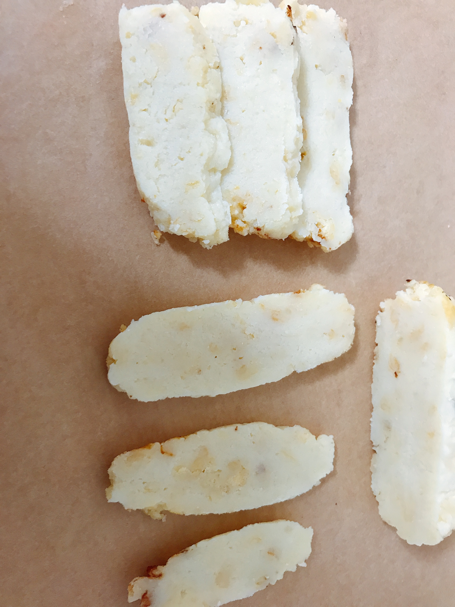
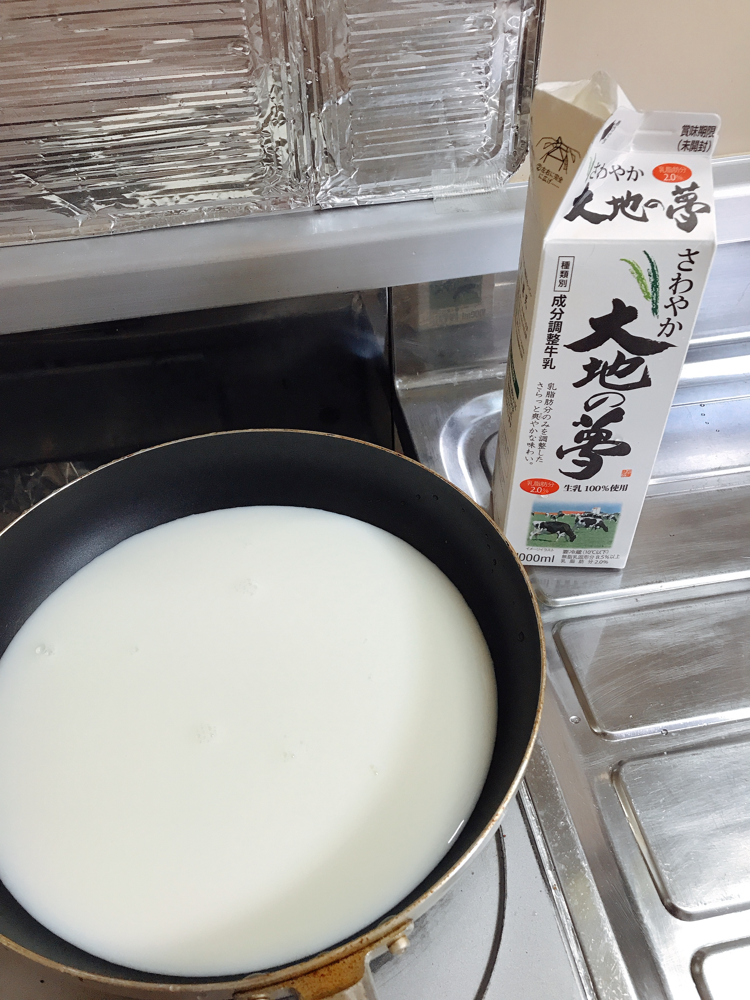
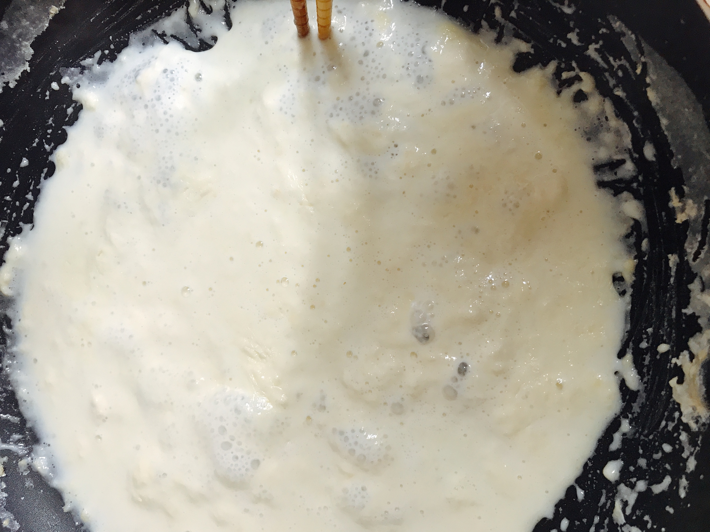
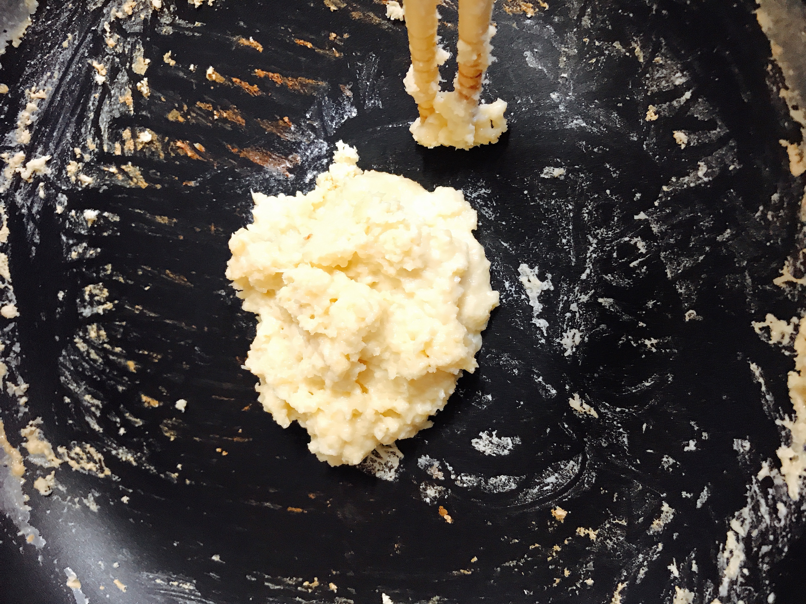
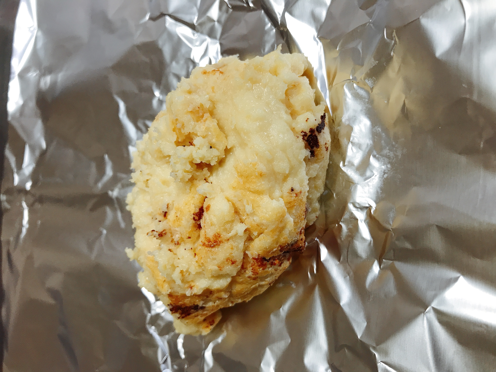

<!DOCTYPE html>
<html>
    <head>
        <meta charset="utf-8">
        <title>キュリオcity~畜産編~</title>
        <link rel="stylesheet" href="stylesheet-for-pc.css" media="screen and (min-width:751px)">
        <link rel="stylesheet" href="stylesheet-for-sp.css" media="screen and (max-width: 750px)">
        <meta name="description" content="蘇の作り方を紹介">
    </head>
    <body>
        <div class="header-1">
            キュリオcity~畜産編~
        </div>
        <div class="header-2">
            <ul>
                <li>家畜の品種</li>
                <li>牛乳の科学</li>
                <li>乳製品</li>
                <li>繁殖の科学</li>
                <li>北大について(総合理系など)</li>
                <li>生物</li>
                <li>編集者のプロフィール</li>
                <li>お問い合わせ</li>
            </ul>
        </div>
        <div class="main-side">
            <div class="side">
                <p class=senkeidaisu>乳製品</p>
                <ol>
                    <li>蘇</li>
                    <li>生クリーム</li>
                    <li>脱脂粉乳</li>
                    <li>チーズ</li>
                    <li>ヨーグルト(発酵乳)</li>
                    <li>練乳</li>
                </ol>
            </div>
            <div class="main">
                <h1>蘇</h1>
                <br>
                <h2>作り方</h2>
                <ol>
                    <li>適当量の牛乳をフライパンに入れる(量はどれぐらいでもいいですが、入れすぎると、その分時間がかかります)。</li>
                    
                    <li>弱火で加熱します。焦げつきやすいので適宜かき混ぜるようにしましょう。</li>
                    
                    <li>最後ほとんど水分が飛んで、固形化してきたら、アルミホイルにうつします。そのままたべてもいいですし、冷蔵庫に入れて冷やして食べてもいいです。</li>
                    
                    
                </ol>
            </div>
        </div>
        <div class="footer">
            <div class="footer-logo">キュリオcity~畜産編~</div>
            <div class="footer-list">
                <ul>
                    <li>家畜の品種</li>
                    <li>牛乳の科学</li>
                    <li>乳製品</li>
                    <li>繁殖の科学</li>
                    <li>北大について(総合理系など)</li>
                    <li>生物</li>
                    <li>編集者のプロフィール</li>
                    <li>お問い合わせ</li>
                </ul>
            </div>

            
        </div>
                
    </body>
</html>
